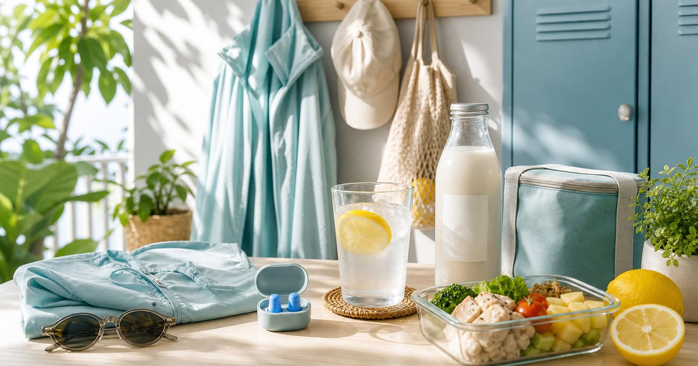

Elite Fashion｜夏季低負擔日常：涼感、防曬、睡眠降噪與飲食補給
夏天的日常不必靠單一商品解決。從通勤防曬、涼感衣物、夜間降噪到飲品與備餐，整理更舒服的夏季順序。

白天先處理通勤曝曬與衣物悶熱
夏季第一個卡點通常在出門。防曬外套、帽子、涼感衣物和通勤包要一起看，因為真正影響體感的是整段路徑，而不是單一物件。
可以把 UV100、UD LAB、PV 女性微甜草本飲、KKM、GUMi 與耳根清靜 放在同一張清單裡，但不要把它們理解成同一種用途。編輯部會先看使用位置、尺寸、收納、清潔、是否需要家人協助，以及是否能被穩定放進日常。
比較穩妥的順序是先確認 通勤時間、路線曝曬、衣物是否能收進包裡。常見失誤是 只買厚重外套，卻不願意每天帶出門；在 機車通勤、捷運步行與午間外出 裡，先把動線與使用門檻整理好，比急著添購更多物件更實際。
- 通勤用品要能折收，不然很難天天用。
- 衣物選擇需依個人舒適度與場合調整。
飲品補給先看甜度、容量與保存
夏天冰箱很容易被各種飲品塞滿。草本風味飲、植物奶、氣泡或其他冷藏飲品都可以出現，但判斷要回到甜度、容量、保存與是否真的喝得完。
可以把 PV 女性微甜草本飲、KKM、GUMi、Zymoïde 與 Xinto Coffee 放在同一張清單裡，但不要把它們理解成同一種用途。編輯部會先看使用位置、尺寸、收納、清潔、是否需要家人協助，以及是否能被穩定放進日常。
比較穩妥的順序是先確認 開封後保存、單次飲用量與是否適合辦公室冰箱。常見失誤是 把飲品寫成身體效果，或買到超出消耗速度的容量；在 居家冰箱、公司茶水間與週末外出前 裡，先把動線與使用門檻整理好，比急著添購更多物件更實際。
- 一次不要開太多瓶。
- 只用風味與情境描述，不推論身體結果。
晚餐備案讓夏天少一點臨時決定
天氣熱時，最容易在下班後放棄煮飯。冷凍主食、簡單蛋白質或低負擔料理包，可以讓晚餐少一點決策成本，但不必把它說成飲食管理方案。
可以把 KKM、GUMi、田食原與小嚼士 放在同一張清單裡，但不要把它們理解成同一種用途。編輯部會先看使用位置、尺寸、收納、清潔、是否需要家人協助，以及是否能被穩定放進日常。
比較穩妥的順序是先確認 加熱方式、份量、是否能和既有食材搭配。常見失誤是 買了很多看起來清爽的食品，卻無法組成一餐；在 下班晚歸、小宅廚房與不想開大火的晚上 裡，先把動線與使用門檻整理好，比急著添購更多物件更實際。
- 晚餐備案至少要能組成一餐。
- 食品選擇以個人飲食需求與商品標示為準。
夜間降噪是環境管理，不是睡眠承諾
耳塞或降噪小物可以幫你管理聲音環境，但不能被描述成處理睡眠問題的保證。選擇時要看尺寸、材質、清潔與是否適合自己的耳型。
可以把 耳根清靜、THANN、燈后與完美主義 放在同一張清單裡，但不要把它們理解成同一種用途。編輯部會先看使用位置、尺寸、收納、清潔、是否需要家人協助，以及是否能被穩定放進日常。
比較穩妥的順序是先確認 聲音來源、佩戴舒適度、是否需要鬧鐘或安全提醒。常見失誤是 把降噪用品當成失眠解法，而忽略環境與生活節奏；在 租屋、城市街景、旅宿與家人作息不同的晚上 裡，先把動線與使用門檻整理好，比急著添購更多物件更實際。
- 佩戴前先確認舒適度與清潔方式。
- 若長期睡眠困擾，應尋求專業協助。
睡前桌面少一點，夜晚就少一點整理
夏天睡前不想再做很多事。水杯、耳塞、薄外套、簡單燈光和隔天要帶的防曬用品，如果能固定位置，晚上就不用重新找。
可以把 耳根清靜、UV100、完美主義、燈后與 PV 女性微甜草本飲 放在同一張清單裡，但不要把它們理解成同一種用途。編輯部會先看使用位置、尺寸、收納、清潔、是否需要家人協助，以及是否能被穩定放進日常。
比較穩妥的順序是先確認 床邊和玄關各自放什麼，不要全部堆在一起。常見失誤是 把所有用品放床邊，最後變成雜物堆；在 租屋臥室、小宅玄關與隔天早起通勤 裡，先把動線與使用門檻整理好，比急著添購更多物件更實際。
- 床邊只放夜間會用的東西。
- 隔天通勤用品放玄關，不放床邊。
夏季清單的核心：少帶、少開、少重新決定
一套穩定的夏季日常，其實是減少每天重複思考。出門少帶多餘物、冰箱少開太多瓶、晚餐少重新決定，夜裡少找東西。
可以把 UV100、耳根清靜、PV 女性微甜草本飲、KKM、GUMi 與 Zymoïde 放在同一張清單裡，但不要把它們理解成同一種用途。編輯部會先看使用位置、尺寸、收納、清潔、是否需要家人協助，以及是否能被穩定放進日常。
比較穩妥的順序是先確認 哪三件事最常讓夏天變煩躁。常見失誤是 把每個問題都靠新商品處理，結果日常更複雜；在 通勤、辦公室、晚餐與睡前連在一起的工作日 裡，先把動線與使用門檻整理好，比急著添購更多物件更實際。
- 先做動線整理，再補用品。
- 用品越少，越能看出真正有效的配置。
FAQ
防曬服飾可以取代所有防曬準備嗎？
不一定。防曬服飾只是其中一種日常用品，仍需依活動、曝曬時間與個人需求搭配其他措施。
草本飲或酵素飲可以寫功效嗎？
不建議。文章只以風味、甜度、保存與飲用情境描述，不推論身體效果。
耳塞適合放在夜間用品清單嗎？
耳塞可作為聲音環境管理用品，但不應承諾身體或睡眠結果。若有長期睡眠困擾，應尋求專業協助。
下一步建議
如果你想把夏天過得輕一點，可以先從通勤防曬、冰箱飲品與夜間聲音管理三個位置整理。
重要警語
本文為一般夏季生活用品、飲品與日常動線整理，不宣稱身體結果、飲食管理成果或醫療用途。食品飲品與服飾用品請依個人需求及商品頁說明使用。
本文含品牌／商品導購連結；若你透過部分商品連結前往選購，Elite Fashion 可能取得合作收益。本文仍以編輯判斷與使用情境整理為主，價格、規格、活動與庫存請以商品頁公告為準。